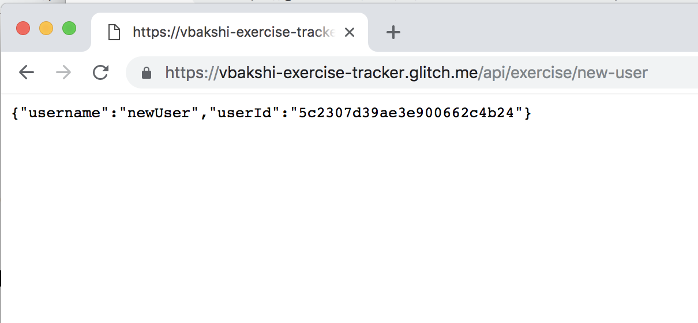

Project Journal: December 25, 2018
Merry Christmas! Today was an interesting day in terms of my understanding of Node, Express, MongoDB and Mongoose. The current freeCodeCamp Project I am working on is the second of five projects, Issue Tracker, in the Information Security and Quality Assurance module. The goal of this project is to create a web app that allows a user to submit information on project issues (such as title, text, created by, assigned to, etc) and retrieve the information on a project from a GET request. I'm using Express with Node with a MongoDB database hosted on mLab.
A couple things that are new for me in this project (I'm glad the fcc team decided to have these elements) which are challenging and deepening my understanding of how code gets executed in a Node environment:
How responses are received by the front end
Thus far, in some of the other fcc back end projects, the response to a GET or POST request comes through in the browser on a new page. For example, in the exercise tracker project, creating a new user via submitting a form would result in the following response:

Where something to the effect of the following is used as the HTTP POST request route:
app.post("/api/exercise/new-user", function(req, res) {
// Create user object to save as a document in the UserCollection collection
let user = new UserCollection({username: req.body.username});
user.save(function (err) {
// return error response to avoid sending the "success" response
if (err) return res.end("username already exists");
// send the success response
res.send({"username": user.username, "userId": user._id});
});
});
However, in this Issue Tracker project the boilerplate they have given, which is generally assumed to be followed in order to pass their tests, prevents the default form action when the user clicks submit. Instead, an AJAX request receives the response and displays it on the current page.
$('#testForm').submit(function(e) {
$.ajax({
url: '/api/issues/apitest',
type: 'post',
data: $('#testForm').serialize(),
success: function(data) {
$('#jsonResult').text(JSON.stringify(data));
}
});
e.preventDefault(); // also, the form does not have `action` or `method` attributes defined
});
In these projects, I usually start by sending a simple response such as...
res.send('Post request received!')just to make sure the basic functionality is covered. ...so per usual, I tried that code in this situation and it didn't show as such in the browser, which led me to figure out the above.
Saving documents in Mongoose models
This is the first project in fcc where I've created seprate files for separate responsibilities. A models/issues.js file creates the Mongoose
model which will hold documents with information on submitted issues through the form, the routes/api.js has my GET, POST and PUT routing logic, and the server.js file receives those routes
via a require.
Thus comes the question: mongoose.connect callback like the following incorrect
pseudocode:
app.route('/api/issues/:project')
.post(function(req, res) {
let objectFollowingTheSchema = //...create object from fields in the request body
mongoose.connect(URI, function(err, db) {
if (err) {//..handle errors}
let issue = new issueCollection(objectFollowingTheSchema);
issue.save(function(err) {
//...handle the error
})
})
return res.send() // returns a response
})
Upon submitting the form once, a document was added to the issueCollection and was successfully saved. However, upon subsequent POST requests, I noticed that the issueCollection still only had 1 document.
After some Stackoverflow/Google searches without luck, I browsed through the Mongoose docs and found the following (emphasis is mine):
Note that no [documents] will be created/removed until the connection your model uses is open. Every model has an associated connection. When you use mongoose.model(), your model will use the default mongoose connection.
Additionally, mongoose.connect() returns a promise, and I'm not sure if it resolves once the .save() callback has run.
I have not yet resolved (no pun intended) this issue, but I see the following next actions as most logical:
- Ensure a connection is open prior to saving a document
- Understand the implications if
mongoose.mode()andmongoose.connect()live in two different files - Place the
mongoose.model(),mongoose.connect()andapp.route().post()logic in the same server.js file, handle the POST request in that same file and then start moving each one to their separate files one-by-one
Hopefully this week shall bring more clarity to this project.